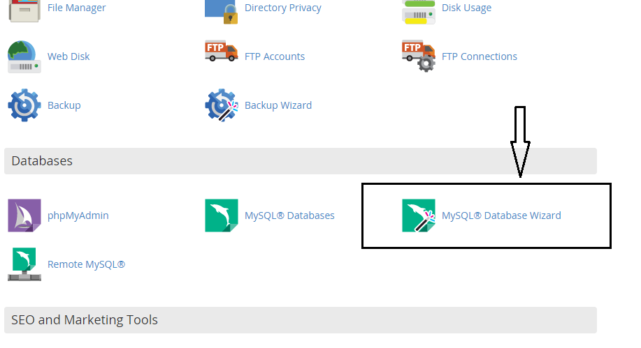
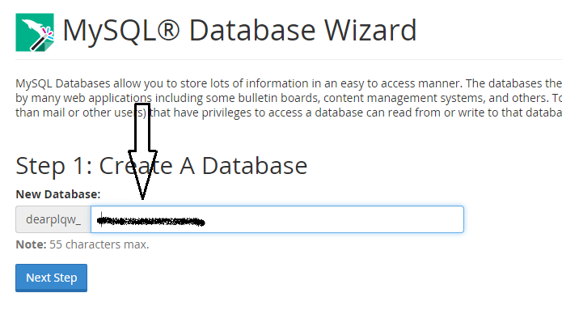
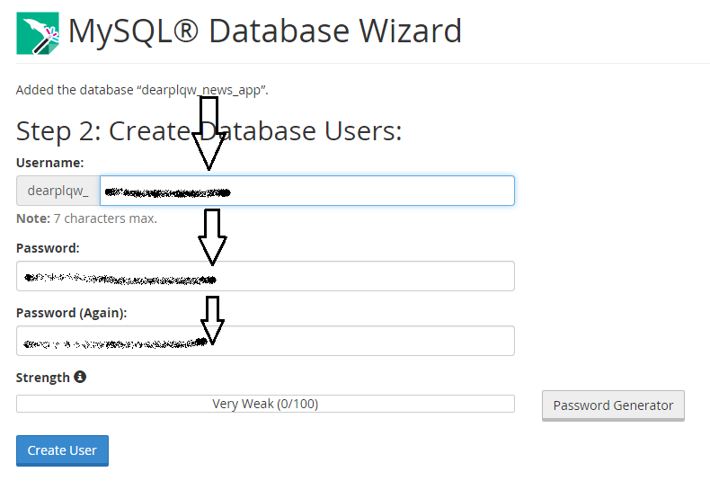
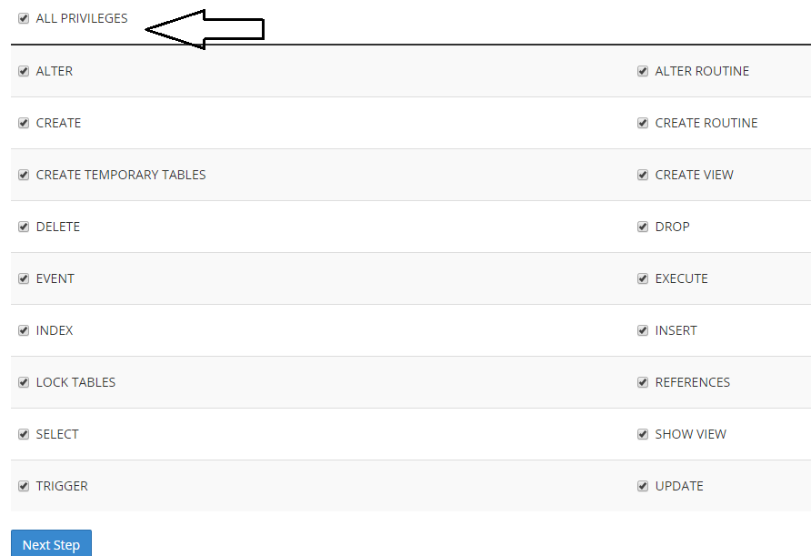
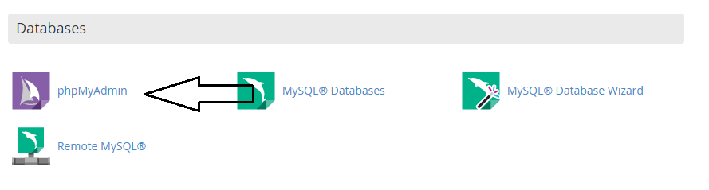
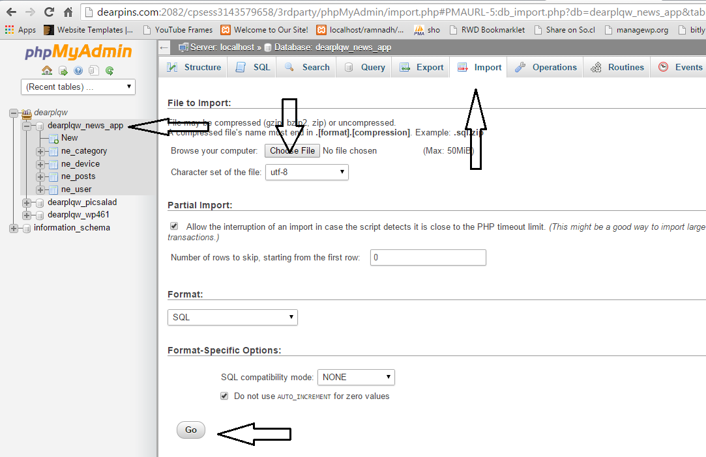

Created: July 22th, 2015
By: weblogtemplates
Thank you for purchasing my script. If you have any questions that are beyond the scope of this help file, please feel free to contact me via codecanyon contact form. Thanks so much!
In this tutorial we are going to show, how you can create and Import database using cpanel and phpmyadmin.
In this tutorial we are going to give a brief explanation about creating cpanel mysql database wizard. If you have full access to your phpmyadmin you can easily create a database directly from phpmyadmin.
After login to cpanel find mysql database wizard as shown below.
Give a databse name
Give database username and password.
Give full privilages.
And complete it by clicking next step button.
From cpanel take phpmyadmin as shown below.
Take previously created database. And import database(db.sql) file from database folder inside main files and click go button.
Now your database is ready.
Thanks for using this script.